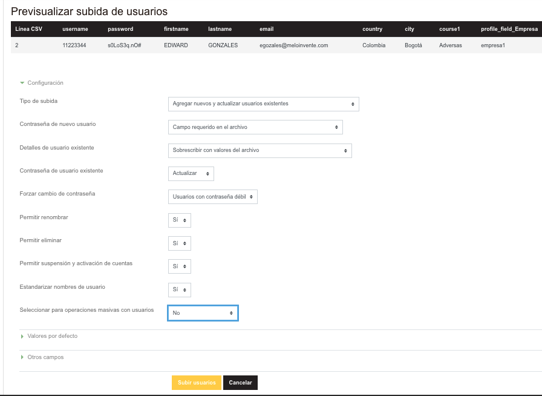

Diciembre 03, 2020
Se actualizo el numero de ventas, el numero de soporte, el correo de soporte y la dirección.
Página Principal > Administración del sitio > Usuarios > Cuentas > Subir usuarioshttps://virtuales.comomanejo.com.co/admin/tool/uploaduser/index.php
Formato base usado por el archivo CSV recuerde colocar el encabezado con esto
username;firstname;lastname;email
Formato si desea agregar otros campos personalizados que previamente ya fueron agregados en campos de perfil del usuario otros campos.
https://virtuales.comomanejo.com.co/user/profile/index.php
username;firstname;lastname;email;profile_field_xxxxx
donde xxxxx es el nombre corto del campo.
para el caso de empresa seria profile_field_Empresa y profile_field_Hoja para la hoja de ruta.

Se puede forzar el cambio de contraseña de un grupo de usuarios por medio de un archivo CSV.
Página Principal > Administración del sitio > Usuarios > Cuentas > Subir usuarioshttps://virtuales.comomanejo.com.co/admin/tool/uploaduser/index.php
Formato usado por el archivo CSV recuerde colocar el encabezado con esto.
username;password
username = Nombre de usuario de la plataforma
password = contraseña actual del usuario

Se puede eliminar usuarios en este enlace se se sube un archivo CSV.
Página Principal > Administración del sitio > Usuarios > Cuentas > Subir usuarioshttps://virtuales.comomanejo.com.co/admin/tool/uploaduser/index.php
Formato usado por el archivo CSV recuerde colocar el encabezado con esto.
username;deleted
username = Nombre de usuario de la plataforma
deleted = 1 para borrar


Por el momento no encuentro una solución para des-matricular por medio de un csv. se puede des-matricular de forma masiva desde el administrador del curso.
Página Principal > Cursos > NombreCategory > NombreCurso > Administración del cursoSe puede cambiar el tema desde un archivo CSV
Página Principal > Administración del sitio > Usuarios > Cuentas > Subir usuarioshttps://virtuales.comomanejo.com.co/admin/tool/uploaduser/index.php
Formato usado por el archivo CSV recuerde colocar el encabezado con esto.
username;firstname;lastname;email;theme
theme = el tema puede ser cualquiera de los siguientes
academi = el que contiene la imagen corporativa de comomanejo
boost
classic


Se puede eliminar cursos desde un archivo CSV
Página Principal > Administración del sitio > Cursos > Subir cursoshttps://virtuales.comomanejo.com.co/admin/tool/uploadcourse/index.php
Formato usado por el archivo CSV recuerde colocar el encabezado con esto (este proceso durante la eliminación puede llevar tiempo paciencia).
shortname;delete
shortname = nombre corto de curso
delete = 1 para borrar
Para ello al rol de estudiante se le modificaron los siguientes permisos.
https://virtuales.comomanejo.com.co/admin/roles/define.php?action=edit&roleid=5
| Actual | Por defecto |
|---|---|
 |
Creador de curso, Profesor, Profesor sin permiso de edición, Estudiante |
 |
 |
 |
|
 |
Se habla de eliminar los usuarios asociados a un curso cuando este se elimina, algo que desde mi punto de vista no debe ser, ya que esos usuarios pueden estar asociados a otros cursos y por eso mismo generar conflictos cuando se consulte la información en otro curso (por ellos no se eliminan los usuarios).